Quiz 1 is at the end of class today, covering last week
Agenda
From one neuron to a layer: why a layer is a matrix multiply
The forward pass: how a prediction actually flows through
Activations: which nonlinearity, and where
Depth and width: what each one buys you
Watching it learn, including one demo that is deliberately the wrong way
Vocabulary you need for the rest of the semester
Last 20 minutes: Lab 2, then Quiz 1.
Week 1 recap
Three claims, none of them yet explained:
An artificial neuron with a sigmoid activation is exactly the logistic regression you already know.
A neural network is what you get when you stack neurons into layers and put a nonlinearity between the layers.
With enough units, such a network can approximate essentially any continuous function.
Today all three get filled in, in that order. By the end you will have written a forward pass yourself and trained a network without using the algorithm that makes training practical.
ANN architecture: 2-3-2-1
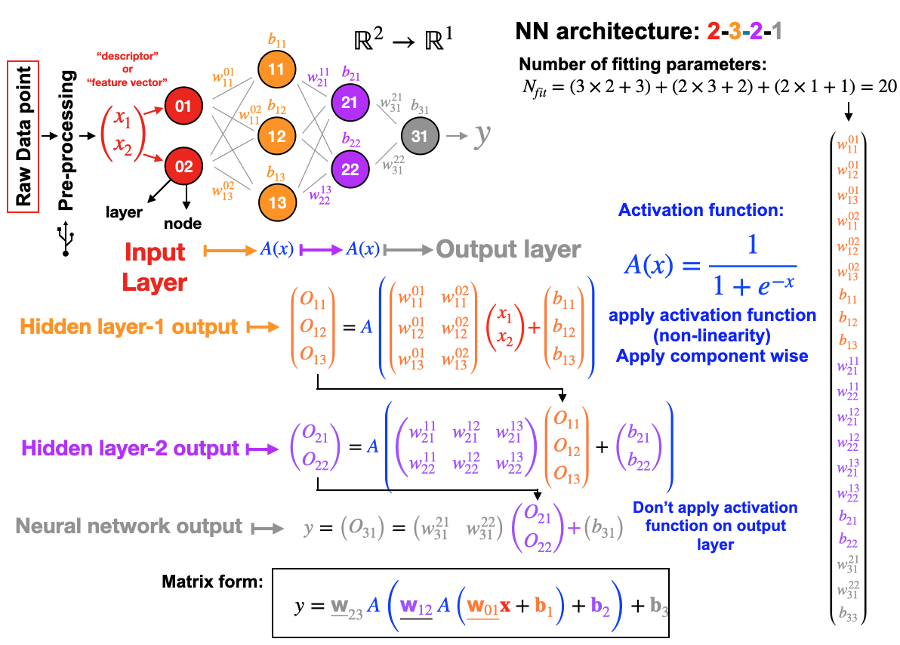
Same 2-3-2-1 network. Today we take it apart: a layer is a matrix multiply, the twenty numbers are the parameters training will change, and the nested formula is the forward pass.
Biological analogy
The vocabulary is borrowed from neuroscience: a neuron receives signals, weighs them, and fires if the total is large enough.
That is a genuinely useful mnemonic for the shape of the computation, and it is where “neuron”, “activation” and “firing” come from.
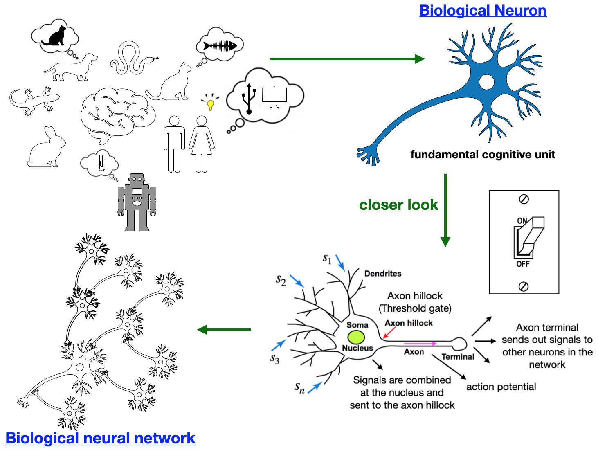
Do not lean on the analogy
The resemblance ends almost immediately. A real neuron is a cell with timing, chemistry and structure; an artificial one is a weighted sum followed by a function. When the two disagree, trust the mathematics. Nothing in this course depends on the biology.
The artificial neuron
A neuron takes an input vector, weighs each component, adds a bias, and passes the total through a function:
z = \mathbf{w}^{\top}\mathbf{x} + b \qquad a = \sigma(z)
\mathbf{x}: the input, one vector per example
\mathbf{w}: one weight per input component
b: the bias, a single number that shifts the total
z: the pre-activation, sometimes called the logit
\sigma: the activation, the only nonlinear step
Set \sigma to the logistic function and this is exactly the logistic regression from last week. Nothing new has happened yet.
A layer of neurons
Put three neurons side by side within one layer. They see the same\mathbf{x}, and each has its own weights and its own bias:
Writing those three lines separately is already tedious, and a real layer has hundreds. So stack the \mathbf{w}_i as the rows of one matrix, one row per neuron:
The lines are notation, not arithmetic: each row is one whole weight vector laid flat, so \mathbf{W} is three rows of length d. The subscript is the neuron index, not the layer index; layers never share a matrix, and this is literally what nn.Linear(d, 3).weight stores.
One line, any number of units. This is the reason deep learning runs on GPUs: the core operation is a matrix multiply, and that is the one thing a GPU does faster than anything else.
Weight matrix shapes
The two rules that resolve nearly every shape error you will hit:
Rows of \mathbf{W} = how many units this layer has, so how many numbers come out
Columns of \mathbf{W} = how many numbers come in
For a network taking 2 inputs through hidden layers of 3 and 2 units to a single output:
Layer
\mathbf{W}
\mathbf{b}
In
Out
Hidden 1
(3, 2)
(3,)
2
3
Hidden 2
(2, 3)
(2,)
3
2
Output
(1, 2)
(1,)
2
1
Notice each layer’s input count is the previous layer’s output count. That chain is the whole constraint on an architecture.
2-3-2-1 network diagram
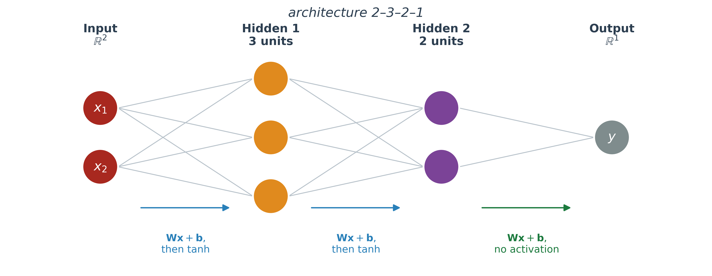
Same 2-3-2-1 network as the map from last week, diagram only. Two numbers go in, three come out of the first hidden layer, two out of the second, one out of the network. The activation sits between the layers, and the output layer here has none.
Parameter count
Every entry of every \mathbf{W} and every \mathbf{b} is a number training will change. So count them:
Twenty parameters for a network you can draw on a napkin. The pattern per layer is (\text{units} \times \text{inputs}) + \text{units}.
Worth being able to do in your head
It tells you instantly whether a model is plausible for your dataset. Twenty parameters and 500 examples is reasonable; twenty million parameters and 500 examples is a memorization machine.
Batches
Everything so far describes a single example. In practice you push many through at once, one row per example:
The transpose appears only because \mathbf{W} stores units as rows while \mathbf{X} stores examples as rows. The mathematics is unchanged.
That first axis is the batch dimension, and it is almost always first
The bias is added to every row, which NumPy and PyTorch both do silently by broadcasting
Nearly every confusing shape error you meet this semester will be a batch axis in the wrong place
PyTorch stores nn.Linear weights as (out_features, in_features) too, so this convention carries directly into Week 3.
Batching example
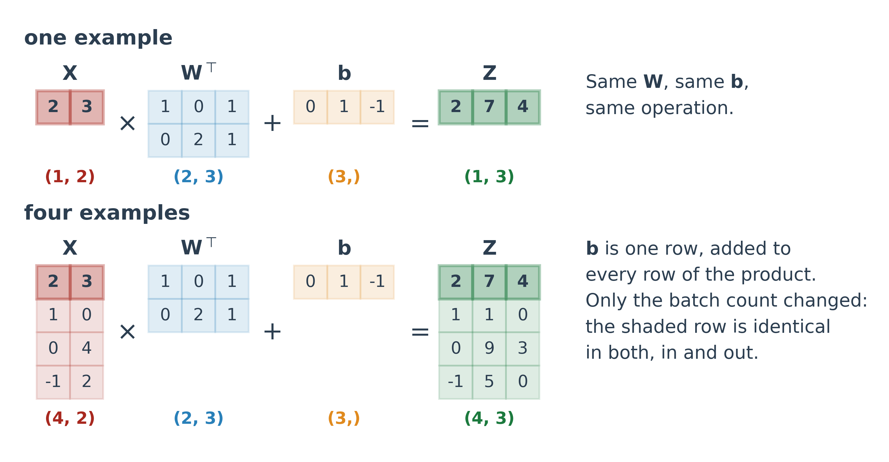
A single example is not a special case of the math; it is a matrix with one row. The shaded row goes in and comes out the same whether it travels alone or with three others, because rows never interact inside a layer. Only N changed.
Tensors
A tensor is just an array with any number of axes, and it is the only data structure in deep learning.
Axes
Shape
Example
1
(d)
one feature vector
2
(N, d)
a batch of vectors
3
(N, T, d)
a batch of sequences
4
(N, C, H, W)
a batch of images
The number of axes is the only thing that changes. Same layer, same matrix multiply; the extra axes are bookkeeping that says how many examples, how long the sequence, how big the picture.
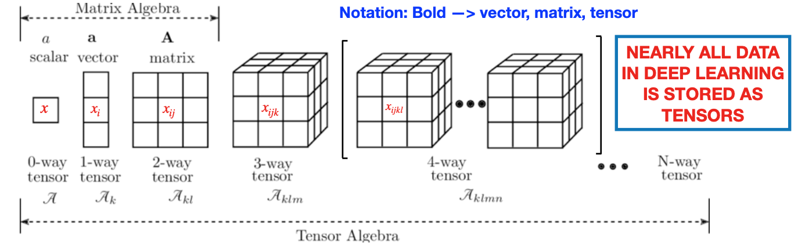
The forward pass
What it is
Writing one from scratch
Why it is all a trained model ever does
Forward pass definition
Feed an input in at the left; apply each layer in turn; read the prediction off at the right. That is the forward pass, and there is nothing more to it:
the last layer, so \mathbf{a}^{(L)} is the prediction
\sigma
the activation, applied element-wise
The superscript is a layer index, not a power.
The only operations are a matrix multiply, an addition, and an element-wise function
Each layer’s output is the next layer’s input, which is why the shapes have to chain
The output layer usually gets a different activation, or none
\mathbf{a}^{(0)} = \mathbf{x} is bookkeeping: the middle formula refers to “the previous layer’s output”, so naming the input layer 0’s output lets that one formula cover every layer, including the first.
The multilayer perceptron
What we have just built has several names, all meaning the same thing:
Multi-layer perceptron (MLP)
Dense network, because every unit connects to every unit in the next layer
Fully connected network, same reason
Feed-forward network, because information moves one way with no loops
Two properties worth stating explicitly:
Units within a layer are not connected to each other
There are no backward or skip connections, which is exactly what later architectures change
Relation to later architectures
Every architecture in this course starts from this one. A CNN is an MLP whose weights are reused across positions, which is a genuine restriction of the same machinery. A transformer keeps MLP blocks but adds attention, a step that lets positions in a sequence share information, weighted by the data itself; that one is an addition rather than a restriction. Either way, this is the object being modified.
A forward pass, in NumPy
Nine lines, no framework. The shapes printed below each step are the point.
Code
import numpy as nprng = np.random.default_rng(6600)# The 2-3-2-1 network from earlier. Weights are (units, inputs).W1, b1 = rng.normal(0, 0.8, (3, 2)), np.zeros(3)W2, b2 = rng.normal(0, 0.8, (2, 3)), np.zeros(2)W3, b3 = rng.normal(0, 0.8, (1, 2)), np.zeros(1)x = np.array([0.7, -1.2]) # one example, 2 featuresa1 = np.tanh(W1 @ x + b1) # hidden 1a2 = np.tanh(W2 @ a1 + b2) # hidden 2y_hat = W3 @ a2 + b3 # output, no activationn_params =sum(a.size for a in (W1, b1, W2, b2, W3, b3))print(f"x {str(x.shape):>7}{np.round(x, 3)}")print(f"a1 {str(a1.shape):>7}{np.round(a1, 3)}")print(f"a2 {str(a2.shape):>7}{np.round(a2, 3)}")print(f"y_hat {str(y_hat.shape):>7}{np.round(y_hat, 3)}")print(f"\nparameters: {n_params}")
Swap the single vector for a matrix of rows and transpose the weights. The arithmetic per example is identical; you have only stopped looping.
Code
X = rng.normal(0, 1, (5, 2)) # five examples, 2 features eachA1 = np.tanh(X @ W1.T + b1) # (5, 3)A2 = np.tanh(A1 @ W2.T + b2) # (5, 2)Y = A2 @ W3.T + b3 # (5, 1)print(f"X {X.shape} -> A1 {A1.shape} -> A2 {A2.shape} -> Y {Y.shape}")print(f"\npredictions: {np.round(Y.ravel(), 3)}")# And it agrees with the one-at-a-time version.one_at_a_time = np.array([ (W3 @ np.tanh(W2 @ np.tanh(W1 @ xi + b1) + b2) + b3)[0]for xi in X])print(f"max difference vs looping: {np.max(np.abs(one_at_a_time - Y.ravel())):.2e}")
X (5, 2) -> A1 (5, 3) -> A2 (5, 2) -> Y (5, 1)
predictions: [-0.783 -0.771 0.404 0.234 0.858]
max difference vs looping: 1.11e-16
Inference is a forward pass
Once training is finished, the weights are frozen numbers and using the model is just the arithmetic above.
Every prediction served in production is a forward pass
Every image classified, token generated, or fraud score returned is a forward pass
The famously expensive part of deep learning is training, not this
This is also why a model can be shipped as a file. The file is the weights; the forward pass is a few lines of code that anyone can write.
Vocabulary you will meet
Running a trained model forward is called inference. When someone says an “inference server” or “inference cost”, they mean exactly the computation on the previous two slides, repeated at scale.
Activations
Why any nonlinearity at all
Which one, and where
The one choice that is not up to you
Why nonlinear activations
Last week’s claim was that without one, stacking gains you nothing. Here is why, in one line of algebra. Take two layers with no activation:
The composition of two linear maps is a linear map. Add fifty more layers and it is still a linear map, just with more arithmetic done to produce the same straight line.
The activation is not a detail or a tuning knob. It is the thing that makes depth mean anything.
Linear layers collapse
97 parameters and three layers, versus the single layer they are secretly equal to. No fitting involved; we just multiply the matrices out.
Code
rng = np.random.default_rng(6600)sizes = [1, 8, 8, 1]# Three layers, no activation anywhere.Ws = [rng.normal(0, 1/ np.sqrt(n_in), (n_out, n_in))for n_in, n_out inzip(sizes[:-1], sizes[1:])]bs = [np.zeros(n_out) for n_out in sizes[1:]]x = np.linspace(-1, 1, 200).reshape(-1, 1)a = x # the honest forward passfor W, b inzip(Ws, bs): a = a @ W.T + bdeep = a.ravel()W_eff, b_eff = np.eye(1), np.zeros(1) # collapse it by handfor W, b inzip(Ws, bs): W_eff = W @ W_eff b_eff = W @ b_eff + bshallow = (x @ W_eff.T + b_eff).ravel()print(f"three linear layers : {sum(w.size for w in Ws) +sum(b.size for b in bs)} parameters")print(f"the one it equals : {W_eff.size + b_eff.size} parameters")print(f"max difference : {np.max(np.abs(deep - shallow)):.2e}")
three linear layers : 97 parameters
the one it equals : 2 parameters
max difference : 4.44e-16
Linear collapse with and without activations
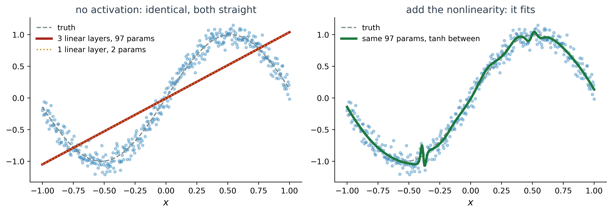
Left: three linear layers and one linear layer, drawn on top of each other. The dotted line is hiding under the solid one. Both reach MSE 0.181, which is what a straight line through this data costs.
Right: the same 97 parameters with tanh between the layers. MSE 0.009.
Both squash any real number into a bounded range, and both were the default for decades. Look at the right panel: far from zero, the slope is flat. A flat slope means a vanishing gradient, and a vanishing gradient means the parameter stops moving. Week 4 returns to this properly.
ReLU
\text{ReLU}(z) = \max(0, z)
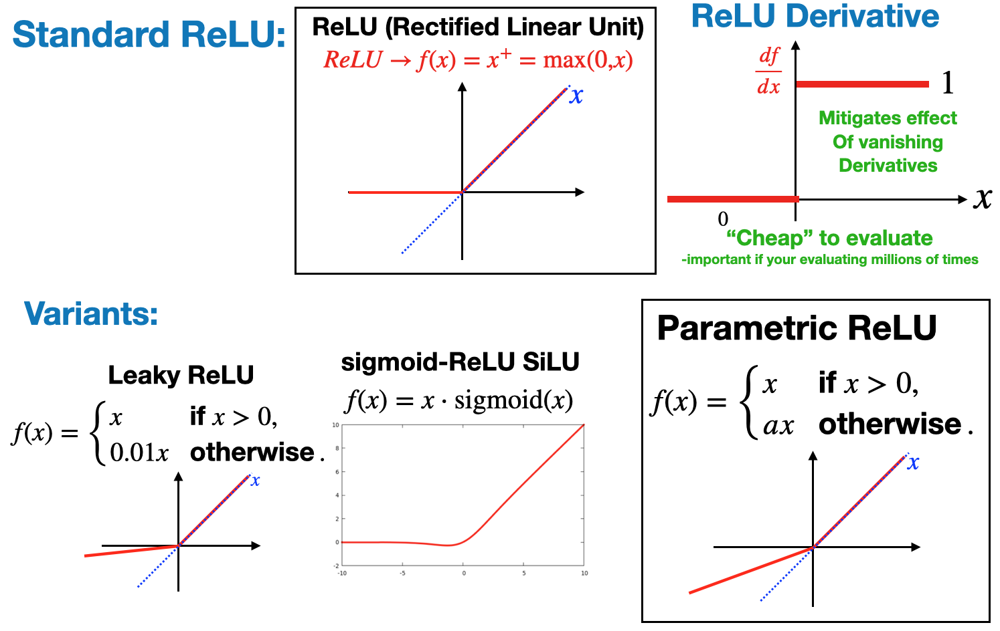
Slope 1 for all positive z, so gradients pass through undiminished no matter how deep the network is
Cheap: a comparison, not an exponential
Sparse: negative inputs produce exact zeros
It is the sensible default for hidden layers today.
The cost is that negative inputs get slope exactly 0, so a unit can stop responding entirely. Variants such as leaky ReLU exist for that; you will almost never need them before you need better data.
ReLU at zero
A fair objection, since the next two weeks are entirely about derivatives. There is a kink at z = 0 and no well-defined slope there.
In practice nobody cares, for two reasons:
Frameworks define the derivative at zero to be 0 (or 1) by convention and move on
Hitting exactly zero in floating point is a measure-zero event
This is worth flagging only because it is the first place in this course where the clean mathematical statement and the working practice differ. There will be others, and it is useful to know which kind of thing you are looking at.
It takes K unbounded numbers and returns K values that are each positive and sum to 1, so the output can be read as a distribution over classes.
Exponentiating makes everything positive and exaggerates differences
Dividing by the sum forces \sum_k p_k = 1
With K = 2 it reduces to the sigmoid, so it is a generalization rather than a new idea
This is the output your multi-class problems need, and it pairs with the categorical cross-entropy from last week’s loss table.
Output-layer activations
Hidden layers are a design choice. The output layer is determined by what you are predicting, and it has to agree with the loss:
Problem
Output units
Output activation
Loss
Scalar regression
1
none
MSE or MAE
Vector regression
m
none
MSE per component
Binary classification
1
sigmoid
binary cross-entropy
Multi-class, K classes
K
softmax
categorical cross-entropy
Getting this pair wrong is one of the most common bugs in student projects, and it usually does not raise an error. It trains, slowly, to something mediocre.
A wrinkle that will bite you in Week 3
PyTorch’s nn.BCEWithLogitsLoss and nn.CrossEntropyLoss apply the sigmoid or softmax themselves, for numerical stability. So you hand them the raw pre-activations and add no output activation of your own. Applying softmax and then CrossEntropyLoss is a real bug that still trains.
Shared body, different heads
The body of the network is unchanged in all four; only the head differs.
Scalar regression
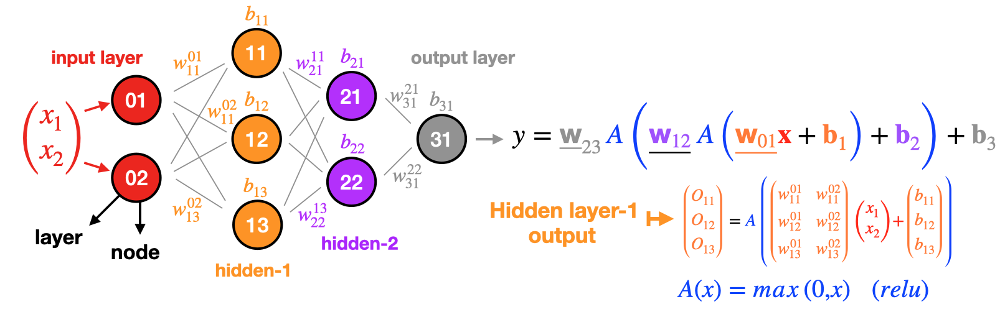
Binary classification
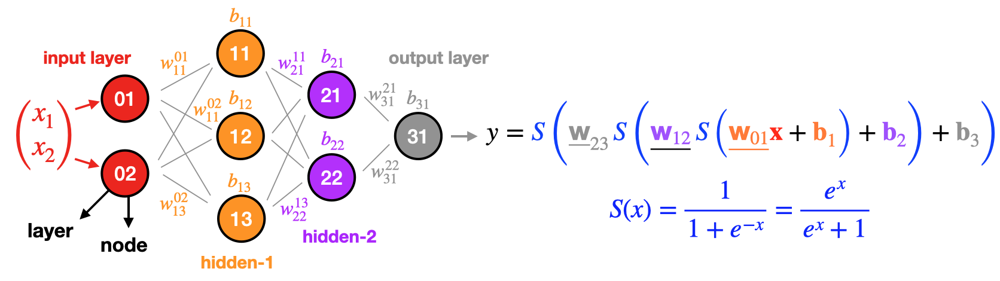
Vector regression
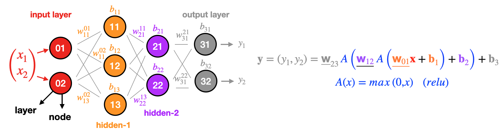
Multi-class classification
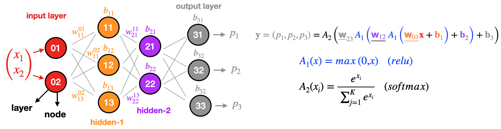
This is why one model family covers the entire problem taxonomy from Week 1.
Choosing activations
The catalog is long. The decision is short:
Hidden layers: ReLU. Use tanh if you have a specific reason, and you will know when you do.
Output layer: read it off the table two slides ago. Not a choice.
Everything else (GELU, SiLU, leaky ReLU, ELU, Mish): real, occasionally worth a percentage point, and never the reason your model is not working.
Where to spend your attention instead
Data quality, the train/validation split, the loss matching the problem, and the learning rate. In that order. An activation swap has never rescued a project in this course; fixing a leaky split has.
Depth and width
What each one buys
What universal approximation does and does not promise
The rule that makes training possible, which is next week’s subject
Width versus depth
Width
More units in a layer.
Each unit adds one more feature the layer can detect
Costs parameters in proportion to the layers on either side
Widening one layer never changes the number of steps a signal passes through
Depth
More layers.
Each layer transforms the previous layer’s output rather than the input
Lets features be built from other features
Costs a longer chain for gradients to travel, which is what makes deep networks hard to train
An architecture is mostly a choice of how to spend a parameter budget between these two.
Hidden layers as coordinate changes
Each layer applies the same two operations to whatever it receives, so the second layer is not looking at your data; it is looking at the first layer’s description of your data.
That is the useful way to read depth. A layer is a change of coordinates: it moves the points into a space where the next step is easier.
The clearest case is a problem where no straight line works at all, and one layer fixes it.
Left: a problem no line can solve. Right: the same points, in the coordinates the hidden layer produced. Class 0 collapses into the corner, class 1 spreads along the axes, and one line now separates 99% of them.
The layer did not draw a curve. It moved the data until a straight line was enough, and the output layer is still only a straight line.
Which raises the question training has to answer: if I change one weight deep inside f_1, how much does the final loss change? The weight is buried under two more functions before it reaches the output.
Calculus has exactly one tool for that.
The chain rule
For a composition of two functions, the derivative is a product:
Two consequences, both of which shape the rest of the course:
Those factors are shared between parameters. Computing them once and reusing them is the entire idea of backpropagation, which is next week.
A product of many small numbers is a very small number. That is the vanishing gradient problem, and it is why the flat regions of sigmoid matter and why ReLU won.
You do not need to differentiate a network by hand in this course. You do need to recognize that a gradient in a deep network is a product along a path.
Universal approximation theorem
A feed-forward network with a single hidden layer containing enough units can approximate any continuous function on a closed, bounded region to any desired accuracy.
Proved in the late 1980s, by Cybenko and by Hornik among others. It is the reason one model family covers regression, classification and generation alike.
Limits of universal approximation
Read the theorem carefully and notice everything it leaves out:
Not how many units. “Enough” could be astronomically many. The theorem is an existence result, and it puts no useful bound on the size.
Not that training will find them. It says good weights exist. Gradient descent from a random start is not guaranteed to reach them, and last week’s non-convex demo showed exactly that failure.
Not that it will generalize. Approximating the function on your data says nothing about new data. This is overfitting, and it is not a theoretical concern; it is the usual outcome.
Not that one layer is a good idea. It says one layer suffices in principle. Nobody builds that way.
The useful reading
Universal approximation tells you the model family is not the limitation. Your data, your optimization, and your evaluation are. Every one of those is a practical problem, which is why the rest of this course is practical.
Why depth
Three architectures, one parameter budget, the same curve:
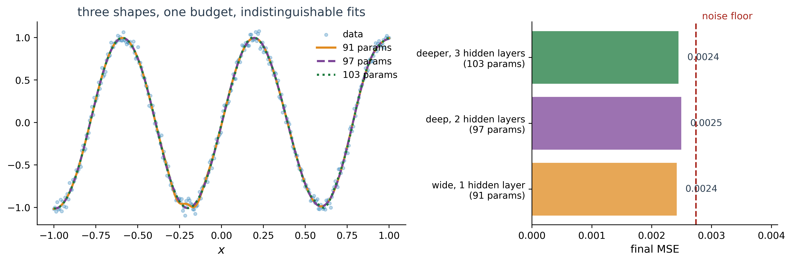
Depth made no difference here. All three reach the noise floor and the fits sit on top of one another; on a problem like this one hidden layer is genuinely enough, exactly as the theorem said. Depth earns its keep when features compose: pixels into edges into parts into objects. Week 5 shows that directly with images.
The takeaway
Reach for depth when your data has structure that builds in stages, not because the field has “deep” in the name.
Blue points inside, orange points around them. No hidden layer, so the model can only draw a straight boundary.
Press play and watch the loss stall near 0.5. It is not training slowly; it is finished. No straight line separates a disc from a ring.
Press play. Let it run to a few hundred epochs. The loss parks around 0.5 and stops moving. Say out loud: this is not slow training, this is a model that cannot represent the answer. Then advance to the next slide, which is the same page with one layer added.
One hidden layer of four units, everything else unchanged. The loss drops toward 0.02 and the boundary closes into a region.
Watch the middle column while it runs: each of the four units learns one straight boundary, and the output layer combines them into a shape. That is the coordinate-change slide, happening live.
Same dataset, same learning rate, one hidden layer of four units. Press play. Loss falls to roughly 0.02, around thirty times better than the previous slide. Hover a hidden unit to show it has learned a single straight boundary, then point at the output panel: the curve is four straight cuts combined. Tie this back to the coordinate-change figure.
Computing gradients
We can now write any forward pass we like, and we have watched a browser find good weights. What we have not done is find the weights ourselves.
which needs \dfrac{\partial \mathcal{L}}{\partial w} for every parameter. For last week’s two-parameter model we could differentiate by hand. For 49 parameters, let alone 49 million, we cannot.
So let us do it the dumbest way that works, and see what it costs.
Gradients by finite differences
A derivative is defined as a limit of differences, so approximate it directly:
The recipe needs nothing you have not already seen:
Run the forward pass and record the loss
For each parameter: nudge it by \varepsilon, re-run the forward pass, see how much the loss changed, put it back
That collection of numbers is the gradient. Take a step.
This is called finite differences. It genuinely works, and every serious library refuses to train this way. Watch what happens.
Training with finite differences
A 1 \to 16 \to 1 tanh network, fitting a curve. Source code for your reference; all the cost lives in the loop inside finite_difference_gradient.
Read the bottom four numbers together: the network went from useless, past what a straight line can do, to within a factor of two of the noise floor.
Code
import numpy as npSEED, HIDDEN, STEPS, LR, EPS =6600, 16, 400, 0.1, 1e-5rng_data, rng_init = np.random.default_rng(SEED), np.random.default_rng(SEED)x = np.linspace(-1, 1, 200).reshape(-1, 1)y_true = np.sin(3.0* x.ravel())y = y_true + rng_data.normal(0, 0.10, 200)SHAPES = [("W", (HIDDEN, 1)), ("b", (HIDDEN,)), ("W", (1, HIDDEN)), ("b", (1,))]N_PARAMS =sum(int(np.prod(s)) for _, s in SHAPES)def unpack(theta): out, i = [], 0for _, shape in SHAPES: n =int(np.prod(shape)) out.append(theta[i:i + n].reshape(shape)) i += nreturn outcalls =0def forward(X, theta):global calls calls +=1 W1, b1, W2, b2 = unpack(theta)return (np.tanh(X @ W1.T + b1) @ W2.T + b2).ravel()def loss(theta):returnfloat(np.mean((forward(x, theta) - y) **2))def finite_difference_gradient(theta): base = loss(theta) grad = np.empty_like(theta)for j inrange(theta.size): # one forward pass per parameter bumped = theta.copy() bumped[j] += EPS grad[j] = (loss(bumped) - base) / EPSreturn grad, basetheta = np.zeros(N_PARAMS)i =0for kind, shape in SHAPES: n =int(np.prod(shape)) theta[i:i + n] = rng_init.normal(0, 1/ np.sqrt(shape[1]), n) if kind =="W"else0.0 i += nstart = loss(theta)for step inrange(STEPS): grad, _ = finite_difference_gradient(theta) theta -= LR * gradstraight_line = np.mean((np.polyval(np.polyfit(x.ravel(), y, 1), x.ravel()) - y) **2)print(f"parameters {N_PARAMS}")print(f"forward passes per gradient {N_PARAMS +1}")print(f"total forward passes {calls:,}")print()print(f"loss at the start {start:.4f}")print(f"loss at the end {loss(theta):.4f}")print(f"a straight line would give {straight_line:.4f}")print(f"the noise floor is {np.mean((y - y_true) **2):.4f}")
parameters 49
forward passes per gradient 50
total forward passes 20,001
loss at the start 1.3256
loss at the end 0.0190
a straight line would give 0.1736
the noise floor is 0.0113
Finite-difference training results
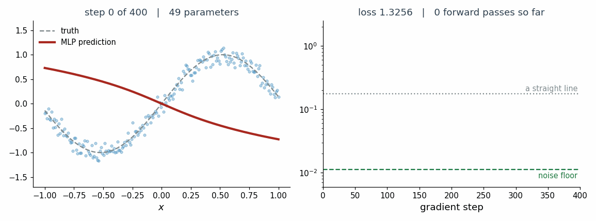
It works. The network beats a straight line by a factor of nine and lands within a factor of two of the noise floor, having never been told anything about sine waves.
Cost of finite-difference gradients
To fit a curve you could sketch by hand:
Parameters
49
Forward passes for one gradient
50
Gradient steps
400
Total forward passes
20,001
Twenty thousand evaluations of the network to move 49 numbers into place.
And the cost scales with the number of parameters, because every single one needs its own forward pass.
Why finite differences do not scale
Same method, real models, at a generous one millisecond per forward pass:
Model
Parameters
One gradient step, this way
Today’s demo
49
0.05 seconds
ResNet-50
25 million
6.9 hours
GPT-3
175 billion
5.5 years
ResNet-50 is the row to hold onto: it is a model you will fine-tune yourself in Week 6, and 6.9 hours buys you one step out of the many thousands needed.
Deep learning is not possible this way. It is not a matter of faster hardware; it is the wrong algorithm by a factor of millions.
Next week: backpropagation
The one algorithm that makes all of this work
There is a way to get the derivative with respect to every parameter, all of them, from a single backward sweep of the network. Not one pass per parameter. One pass, total.
It is called backpropagation, it is the chain rule applied to the network’s structure, and it is the reason deep learning exists as a practical field rather than a mathematical curiosity.
Next week: backpropagation, computational graphs, and PyTorch doing all of it for you.
Training vocabulary
The words you need to read a training script, or a paper, or your own logs.
Minibatch gradient descent
Gradient descent needs a loss, and you get to choose how much data to compute it on:
Data per step
Consequence
Full-batch
all N examples
most accurate step, slowest, and N may not fit in memory
Stochastic (SGD)
1 example
very fast, very noisy steps
Mini-batch
B examples
the compromise everyone actually uses
Typical B is 32 to 256. Last week’s demo was full-batch, because the whole dataset was 200 points.
The noise in mini-batch gradients is not purely a cost: it helps the optimizer escape the bad flat regions you saw in last week’s non-convex demo.
Epoch, iteration, batch size
These three get confused constantly, including in published papers.
Batch sizeB: examples used for one update
Iteration (or step): one parameter update
Epoch: one full pass through the training set
\text{iterations per epoch} = \left\lceil \frac{N}{B} \right\rceil
With 10,000 examples and B = 100: one epoch is 100 iterations. Training for 20 epochs means 2,000 updates.
Why it matters
“Trained for 10 epochs” and “trained for 10 iterations” differ by a factor of N/B. When you compare your run to somebody else’s, check which one they meant.
The same \lambda multiplies every parameter’s gradient. One number controls thousands of moves at once, which is why it is the hyper-parameter that matters most.
Too small: the loss creeps down and you conclude the model cannot learn
Too large: the loss jumps around, or becomes nan within a few steps
Reasonable starting point: 10^{-3}, and then look at the curve
Week 4 is largely about not having to guess: adaptive optimizers give parameters their own effective step sizes, and schedules change \lambda over training.
Training curves
The first thing to look at, every time, before any metric:
What you see
What it usually means
Both curves falling
working; keep going
Training falls, validation rises
overfitting; stop at the minimum
Both flat and high
learning rate too small, or a bug
Loss becomes nan
learning rate too large
Very spiky
learning rate too large, or batch too small
Training loss near zero on a hard problem
leakage; check your split
The last row is the one to be suspicious of. A result that looks too good is the single most common serious bug in student projects, and it never announces itself.
Weight initialization
A fair question: why not start every weight at zero, the way you might for a linear model?
Because then every unit in a layer computes exactly the same thing, receives exactly the same gradient, and updates exactly the same way. They stay identical forever, and a 512-unit layer does the work of one unit.
Random initialization exists to break that symmetry. Notice that in today’s demo the weights were random and the biases were zero, which is the usual pattern: the weights already break the symmetry, so the biases do not have to.
Week 4 covers why the scale of that randomness matters too.
Closing
Lab 2
Quiz 2, so you know what to study
Supplemental content
Quiz 1, right now
Lab 2
Released today. Due Wednesday Sep 9, 11:59 PM ET.
Today’s lecture, by hand, in NumPy:
Build a layer as a matrix multiply, and get the shapes right
Count the parameters of a network, and check it against your code
Write a forward pass, single example and batched
Show the collapse yourself: stack linear layers, then add a nonlinearity
Train the small network with finite differences, and count the forward passes
Same rules as Lab 1: graded for completion, work together if you like, solutions posted after the deadline.
Why finite differences again
Next week’s lab replaces your hand-rolled gradient with two lines of PyTorch autograd. Having felt the cost first is the point; the payoff does not land otherwise.
Quiz 2 study guide
Next week, end of class. Closed-book, no notes, no aids. A formula sheet is handed out with the quiz, so nothing here needs memorizing; choosing the right formula is still on you.
What it covers, all from today and Lab 2:
Shapes: given an architecture, the shape of any \mathbf{W} or \mathbf{b}, and the parameter count
The forward pass: the order of operations, and what each layer receives
Why a nonlinearity: what stacking linear layers gives you, and why
Activations: which for hidden layers, which for each output, and why the output is not a free choice
Depth vs width: what universal approximation does and does not promise
From Lab 2: what you observed, and why. Explanations, not numbers.
The most reliable way to prepare
Do Lab 2 yourself, and be able to say why each result came out the way it did. Questions are written so that having run the lab is hard to fake.
Supplemental content
These are optional. No graded work assumes you watched them. They are on Prof. Hickman’s centralized lecture content site, and they go deeper on today’s topics than we had time for.
Where we started: three unexplained claims from last week. Where we are:
A layer is a matrix multiply plus a bias, and its shape is fully determined by how many units it has and how many inputs it receives
A forward pass is those layers applied in order, and it is everything a trained model does
The activation is what keeps depth from collapsing; ReLU for hidden layers, and the output layer is dictated by the problem
Universal approximation says the model family is not your limitation
Getting gradients the obvious way costs one forward pass per parameter, which is hopeless
And one habit, continued from last week: look at the training curve before you look at any metric. It tells you whether the number you are about to report means anything.
Next week
Backpropagation, computational graphs, and PyTorch. How every gradient comes out of one backward sweep, and the framework that does it for you.
Before Thursday: Lab 2 (due Wed), and a Spotlight slot if you have not claimed one.
Quiz 1
Closed-book, no notes. Covers Week 1: the six components, losses, splits, overfitting, gradient descent, and Lab 1.